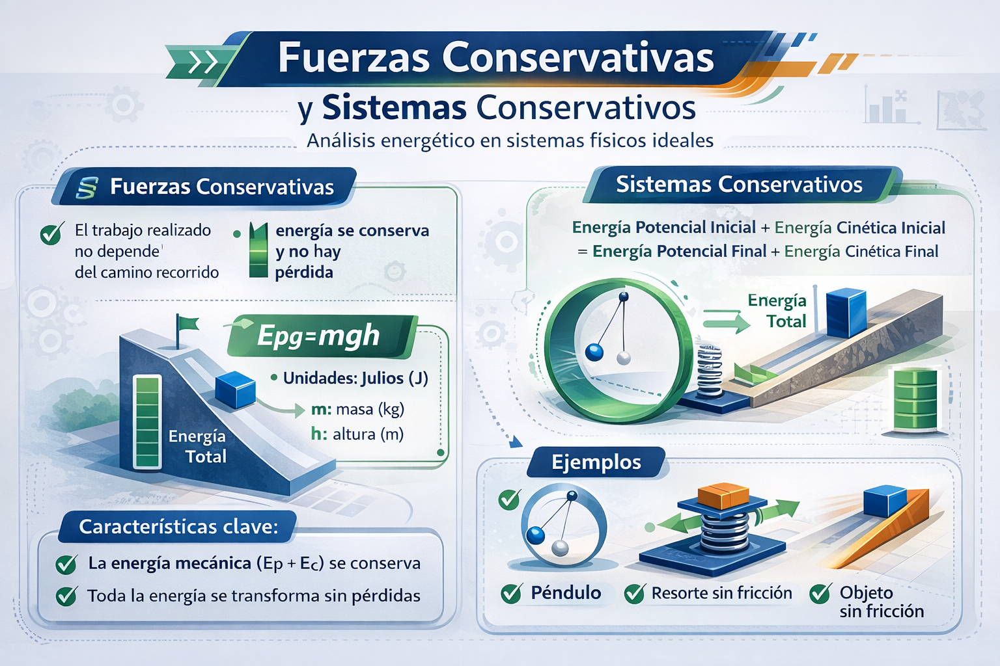

Trabajo Final Jimmy Quinga
Principio de la Conservación de la Energía
¿Qué es?
Un sistema conservativo es un sistema físico en el que la energía mecánica total permanece constante porque únicamente actúan fuerzas conservativas, como la gravitatoria o la elástica. En este tipo de sistema la energía puede transformarse entre energía cinética y energía potencial, pero no se pierde, ya que no intervienen fuerzas disipativas como la fricción o la resistencia del aire que la transformen en calor u otras formas de energía.
¡Escuchame!
Antes de comenzar con la teoría y las ecuaciones, te invitamos a sumergirte en una breve historia donde la energía es la protagonista.
A través de una situación desafiante, descubrirás cómo la energía cinética y potencial se transforman continuamente dentro de sistemas conservativos.
Prepárate para analizar, decidir y aplicar los principios físicos como un verdadero ingeniero.
https://gemini.google.com/share/f0e1546e49de
Obra publicada con Licencia Creative Commons Reconocimiento Compartir igual 4.0